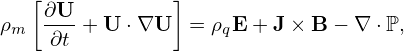

![∫ Rc
Ψp1 = Bz(R,Zc )2πRdR
∫0
= Rc-1∂Ψ-2πRdR
0 R ∂R
∫ Rc ∂Ψ
= 2π ∂R-dR
0
= 2π[Ψ(Rc,Zc)− Ψ(0,Zc)].](tokamak_equilibrium706x.png)
(In practice, I choose the positive direction of 𝜃 and ϕ along the direction of toroidal and poloidal magnetic field (i.e., B ⋅∇ϕ and B ⋅∇𝜃 are always positive in (ψ,𝜃,ϕ) coordinates system). Then, the qlocal defined by Eq. (155) is always positive. It follows that qglobal should be also positive. Next, let us examine whether this property is correctly preserved by Eq. (161). Case 1: The radial coordinate ψ is chosen as Ψ′≡ dΨ∕dψ > 0. Then the factor before the integration in Eq. (161) is negative. We can further verify that 𝒥 is always negative for either the case that ∇Ψ is pointing inward or outward. Therefore the .r.h.s. of Eq. (161) is always positive for this case. Case 2: The radial coordinate ψ is chosen as Ψ′≡ dΨ∕dψ < 0. Then the factor before the integration in Eq. (161) is positive. We can further verify that 𝒥 is always positive for either the case that ∇Ψ is pointing inward or outward. The above two cases include all possibilities. Therefore, the positivity of qglobal is always guaranteed)
a magnetic surface forms a central hole around Z axis. Using Gauss’s theorem in the volume within the central hole, and noting that no magnetic field line point-intersects a magnetic surface, we know that the magnetic flux through any cross section of the hole is equal to each other. Next we calculate this magnetic flux. To make the calculation easy, we select a plane cross section perpendicular to the Z axis, as is shown by the dash line in Fig. 1. In this case, only BZ contribute to the magnetic flux, which is written (the positive direction of the cross section is chosen in the direction of Z)
 | (561) |
be generalized to any revolution surface that is generated by rotating a curve segment on the poloidal plane around Z axis. For instance, a curve on the poloidal plane that connects the magnetic axis and a point on a flux surface can form a toroidal surface (e.g., surface S2 in Fig. 66). The magnetic flux through the toroidal surface S2 is given by
i.e.
|
| (562) |
which indicates that the difference of Ψ between the Z axis and a magnetic surface is the poloidal magnetic flux per radian through the central hole, Ψp1∕2π.
The magnetic surface forms a central hole around Z axis. The magnetic flux through any cross section of the central hole is equal to each other and is given by Ψp = 2π(Ψb − Ψa), where Ψa and Ψb are the value of Ψ at the Z axis and the magnetic surface, respectively.
The conclusion in Eq. (561) can be generalized to any revolution surface that is generated by rotating a curve on the poloidal plane about Z axis. For instance, a curve on the poloidal plane that connects the magnetic axis and a point on a flux surface can form a toroidal surface (e.g., surface S2 in Fig. 66).
Also note the difference between Ψp and Ψp1 defined in Sec. 1.7: Ψp1 is the magnetic flux through the central hole of a torus and thus includes the flux in the center transformer, and Ψp is the magnetic flux through the ribbon between the magnetic axis and the magnetic surface.